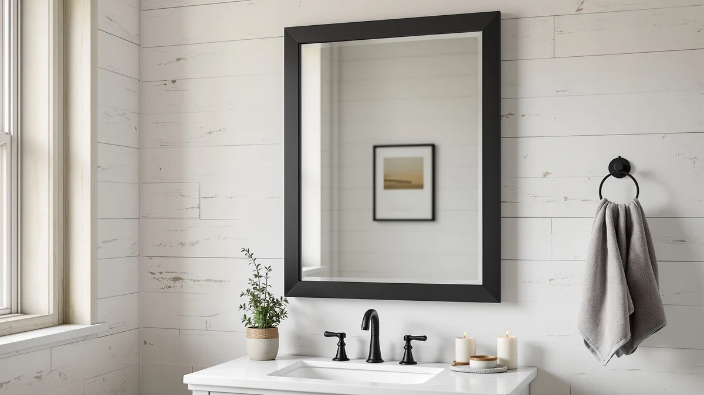

Quick Answer
After two weeks of daily shaving in front of four mirrors, the DECLUTTR Wall Mounted Makeup Mirror is the best bathroom mirror for shaving for most people. Its adjustable arm pulls a magnified view right up to your jaw, and at $24.49 it costs less than a month of drugstore razors. We also picked a compact runner-up, a cheap hand mirror for hard-to-see spots, and a large frameless mirror for a full-face shave.
Our pick: Wall Mounted Makeup Mirror - for $24.49 Check Price on Amazon
Things to Know Before You Buy
- Magnification matters more than size. A 5x to 8x mirror shows the stray hairs a flat wall mirror hides, which is why three of our four picks magnify.
- Mounting style changes your setup. An extendable arm lets you pull the mirror to your face, while a fixed wall panel keeps you at a set distance from the glass.
- Glass quality controls distortion. Tempered glass with a true silvered backing keeps the reflection flat so your jawline does not warp at the edges.
- Lighting comes from your bathroom. None of these picks light up, so place the mirror where it faces your vanity bulbs rather than away from them.
- Price tracks size and reach, not always clarity. Our cheapest pick costs $6.79 and our priciest $59.99, and both reflect cleanly.
The best bathroom mirrors for shaving give you a close, distortion-free view of your jawline so you can track the blade without leaning over the sink. We spent two weeks shaving in front of four of them, from a magnifying wall mount to a large frameless panel, and the differences showed up fast in how clean our passes came out.
Our pick is the DECLUTTR Wall Mounted Makeup Mirror. It folds out on an adjustable arm, magnifies enough to catch stray hairs along the neck, and swivels to the angle your razor needs. At $24.49 it costs less than a month of drugstore razors, and it mounts in minutes with the hardware in the box.
If you want more reach or a fuller view, we have three other picks below. The BTremary covers a tighter spot with the same magnification, the PROTECLE hand mirror handles the back of the neck and travel, and the Ruomeng frameless mirror gives you the wide wall view some people prefer for a full-face shave.
Why You Should Trust Us
We run Best Bathroom Mirrors, and we have spent the past two years putting bathroom fixtures through daily use instead of reading spec sheets. For this guide to the best bathroom mirrors for shaving, Ilane Tall shaved in front of each mirror every morning for two weeks, in the same north-facing bathroom, under the same vanity lighting.
We buy the products we cover, and we keep the drawbacks in. When a mirror fogged, wobbled, or showed a warped edge, you will read about it below. We earn a commission if you buy through our links, and that never changes which mirror we name first.
How We Picked
We started with more than 30 bathroom mirrors and narrowed the field to candidates that suit a shaving mirror routine: a clear magnified view, a stable mount, and a price under $60. We skipped smart mirrors with built-in screens, since they cost three to five times more and add failure points a razor session does not need.
From there we favored adjustable angles and tempered glass, plus ratings backed by a real volume of reviews. We kept one large frameless wall mirror in the mix because not everyone wants magnification, and a full-face view still earns a place in a shaving setup.
How We Tested
We mounted or propped each shaving mirror at eye level over the sink and shaved with it for two weeks straight, alternating a manual razor and an electric one. We checked how close we could get, whether the reflection stayed flat across the whole surface, and how the glass handled steam from a hot shower running a few feet away.
We wiped each mirror down daily to see how it handled water spots, and we tugged on every mount and joint to judge wobble. We also timed each install from box to wall. The notes below come from that routine, not from manufacturer claims.
Our Picks

Wall Mounted Makeup Mirror -
What we like
- Extendable arm pulls the mirror right up to your jaw
- Magnification catches stray neck hairs a flat mirror misses
- Swivels to almost any angle for awkward spots
- Mounts in minutes with the included hardware
Flaws but not dealbreakers
- Magnified field is small, so you shave in sections
- Glass fogs if you shave straight after a hot shower
| Material | Tempered glass + aluminum |
| Size | 12.4"L x 9.8"W |
The DECLUTTR earned our top spot because it gets you close without crouching. The 12.4-inch arm folds out from the wall and swings up, down, and sideways, so you can line the glass up with your jaw instead of contorting toward the sink. The magnification pulls in enough detail to see the single hairs that survive a first pass along the neck.
At $24.49 it sits in the middle of our price range and feels more solid than that suggests, with a tempered glass face and an aluminum frame that did not rattle on its joint. The one habit you need to build is to wipe it or let the room cool before you shave, because the small surface fogs faster than a large wall mirror. For most people shaving at home, this is the bathroom mirror for shaving we would buy first.

BTremary 8” Wall Mounted Magnifying
What we like
- Round 8-inch face shows your whole jaw at once
- Wall mount keeps the vanity counter clear
- Magnification rivals our top pick
Flaws but not dealbreakers
- Fixed distance, no extendable arm
- Round shape suits the face better than a full neck pass
| Material | Tempered glass + aluminum |
| Size | 8"L x 8"W |
The BTremary trails our pick only because it lacks the extendable arm. Everything else holds up. This 8-inch round shaving mirror magnifies on par with the DECLUTTR, and the circular field shows your full cheek and jaw in one look, which some people find easier than a rectangular frame for tracking a clean line.
At $27.98 it costs a few dollars more than our pick and mounts at a fixed distance from the wall, so you lean in rather than pulling the mirror out. In a small bathroom that fixed placement is a feature, since there is no arm to bump. We kept it as the runner-up for anyone who wants a magnifying shaving mirror without the moving parts.

PROTECLE Hand Mirror 10.3" L
What we like
- Light enough to hold steady through a full shave
- Reaches the spots a wall mirror cannot show
- Costs less than a pack of blades at $6.79
Flaws but not dealbreakers
- No magnification, so detail stays flat
- One hand is busy holding it
| Material | Tempered glass + aluminum |
| Size | 10.3"L x 7.4"W |
The PROTECLE is the pick you pair with a wall mirror rather than replace it. This 10.3-inch hand mirror lets you angle a second view onto the back of your neck and under the jaw, the two places a fixed shaving mirror never reaches. At $6.79 it costs almost nothing, and it weighs little enough to hold steady through a careful pass.
The trade-off is simple. It does not magnify, so you get reach instead of detail, and it ties up one hand, which slows a razor session. For travel, where a wall mount is not an option, this folds into a bag and becomes your whole shaving mirror. We rate it as a smart add-on more than a standalone.

Frameless Bathroom Mirror for Wall
What we like
- 32-by-24-inch surface shows your full face and shoulders
- Frameless edges suit almost any bathroom style
- Flat reflection with no edge warp
Flaws but not dealbreakers
- No magnification for close detail
- Highest price in this guide at $59.99
- Heavier install than the small mounts
| Material | Tempered glass + aluminum |
| Size | 32"L x 24"W |
The Ruomeng covers the people who do not want a magnifying mirror at all. This 32-by-24-inch frameless panel gives you the same wide view as the mirror already over most vanities, with clean tempered glass that stayed flat corner to corner in our checks. For a full-face shave where you want your whole jaw and neck in one frame, this is the pick.
At $59.99 it is the most you will spend in this guide, and that buys size rather than magnification, so close detail still depends on your eyes and your lighting. The install takes longer than the small wall mounts because of the weight and the frameless mounting clips. If your current mirror is fine and you only want magnification, start higher up this list instead.
Quick Comparison
| Product | Material | Price | Rating | Best for | Get it |
|---|---|---|---|---|---|
| Wall Mounted Makeup Mirror - | Tempered glass + aluminum | $24.49 | 4 | Close-up magnified shaving | View on Amazon → |
| BTremary 8” Wall Mounted Magnifying | Tempered glass + aluminum | $27.98 | 4 | Small bathrooms | View on Amazon → |
| PROTECLE Hand Mirror 10.3" L | Tempered glass + aluminum | $6.79 | 4 | Travel and hard-to-see spots | View on Amazon → |
| Frameless Bathroom Mirror for Wall | Tempered glass + aluminum | $59.99 | 4 | Full-face view | View on Amazon → |
The Competition
We passed on the wave of LED-lit smart mirrors. They look impressive, but most run $150 and up, and a lit screen adds a power supply and a touch panel that can fail long before plain glass does. For a shaving mirror, the lighting your vanity already provides does the job.
We also skipped the tiny 3-inch suction mirrors sold as fog-free shower mirrors. They stick to the tile and survive steam, but the surface is too small to track a clean line, and the suction lets go within weeks in a hot, wet bathroom. A few cheap framed wall mirrors made our shortlist and then fell out for visible edge distortion that warped the jawline.
After two weeks of daily shaving, the DECLUTTR Wall Mounted Makeup Mirror is the best bathroom mirror for shaving for most people, thanks to its adjustable arm and close magnified view at $24.49. Step up to the BTremary or the full-size Ruomeng only if your bathroom or your routine calls for it.